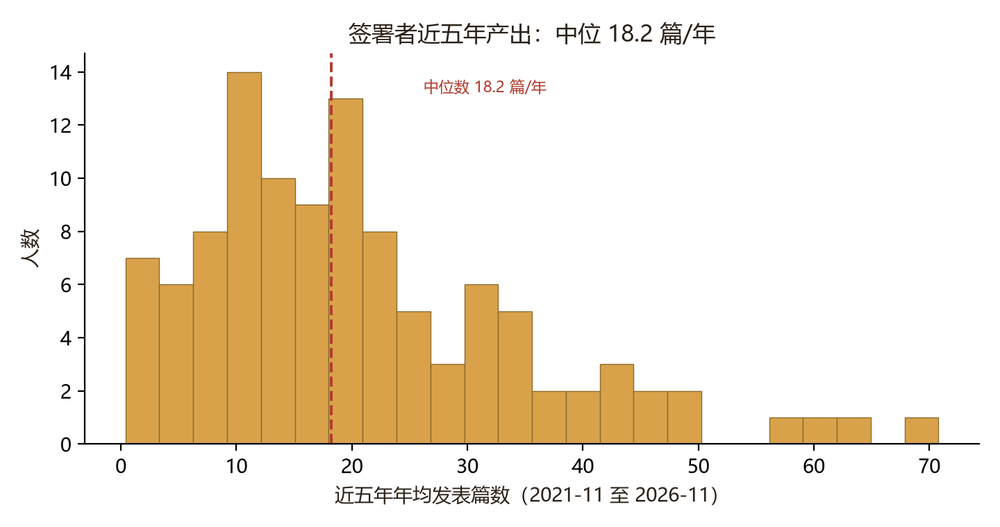
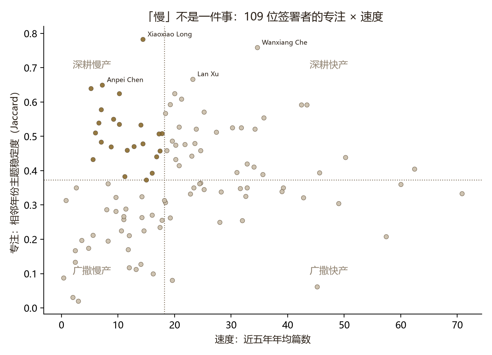
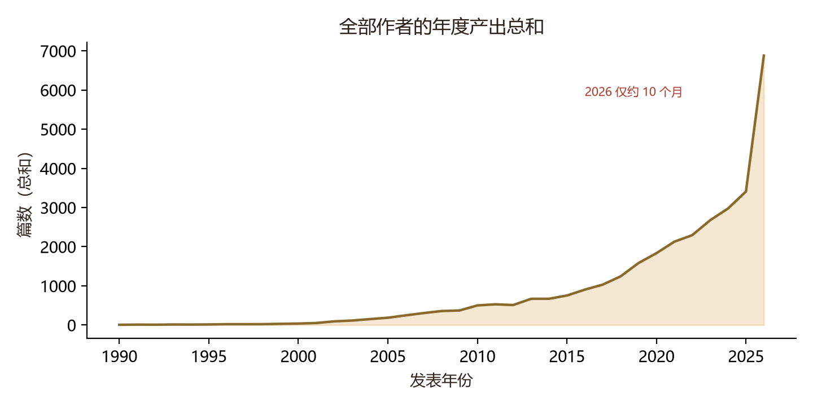
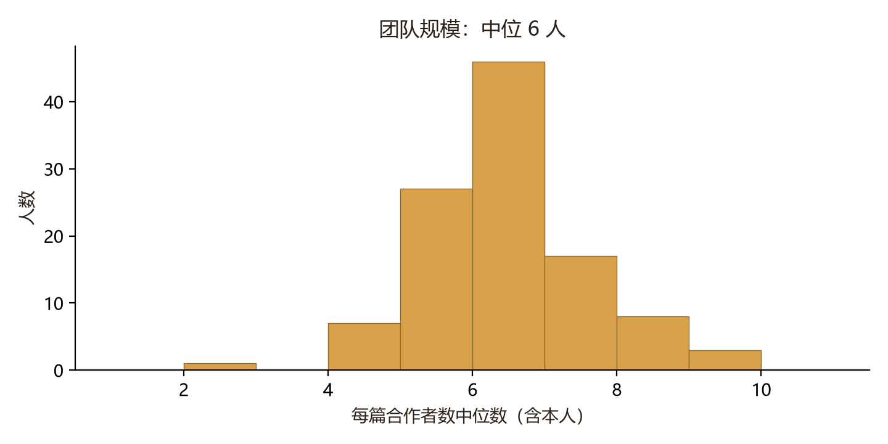
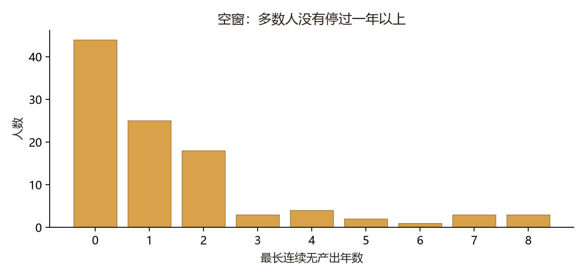

任务：给“慢”下一个能计算的定义，再去量这批签署者到底有多慢。
数据链路是可追溯的三步，每一步都留了中间文件：
| 环节 | 数据 | 说明 |
|---|---|---|
| ① 名单 | 120 人（中英双语两表交叉核对） | 页面原始表格 signatories_raw.json |
| ② 身份消歧 | 117 / 120 匹配到 OpenAlex 作者 ID | 按姓名 + 单位 + 研究方向三路比对；3 人未解决（见附录） |
| ③ 作品 | 33,347 条记录 | OpenAlex works，逐作者分文件存 works/*.json，字段含标题、日期、主题、合作者、被引 |
OpenAlex 的作者 ID 会犯错，而且错得很张扬。三个必须在报告里说清楚的动作：
Yue Wang 名下 5,652 篇、跨度 1991–2026；Min Yang 2,743 篇。
这不可能是一个人——这是同名不同人被并成一个 ID。类似的还有 Dong Du（团队规模中位数 100 人）
和 Yao Mu。判断规则写死在代码里：总量 > 1500 篇或年均 > 40 篇 → 标记。
附带说明：Dong Du 这类未必是错误。高能物理/大型实验的合著者一年署名上百篇是常态——
这恰好证明“篇数”这个尺子在跨领域比较时会直接失效。所以不是“删掉异常”，而是“标记 + 不参与汇总”。
同一篇论文的预印本、会议版、期刊版在 OpenAlex 里是不同记录。按归一化标题（小写、去标点、合并空格）在作者内部去重， 保留最早日期：33,347 → 32,652 条。
Yang Yu 最早记录 1900 年、跨度 126 年，明显是脏数据；Yuchao Dai、Yao Yao
的起始年早于其学术生涯；Minghan Li 只匹配到 1 篇（账号未合并）。同样标记剔除。
| 阶段 | 作者数 | 作品数 |
|---|---|---|
| 签署名单 | 120 | — |
| 消歧成功 | 117 | 33,347 |
| 标题去重后 | 117 | 32,652 |
| 进入指标计算 | 109 | 22,108 |
我先试过最直观的那个——篇间隔中位数。结果它给出 0.03 年（约 11 天）。不是算错了，是它测的东西不对： 一个人一年发 20 篇，间隔当然以天计。间隔衡量的是密度，不是深度。所以放弃。
换成四个维度，每个都给选择理由和“它会怎么骗人”：
| 维度 | 口径 | 选择理由 / 它怎么骗人 |
|---|---|---|
| A 速度 速度 |
近五年（2021-11-11 至快照日）年均篇数 | 直观、易核。骗人之处：跨领域不可比（高能物理 vs 单篇长周期人文计算）；2026 年只到 11 月，但用“近五年窗口 ÷ 5”已摊平。 |
| B 专注 专注度 |
相邻两个有产出的年份，各自 top3 研究主题集合的 Jaccard 相似度，取均值 | 这是本实验的核心假设：“慢”的语义更接近“长期啃同一个问题”，而不是“产出少”。骗人之处：OpenAlex 主题是按论文自动打的三级标签，噪声大；一个人换到邻近子领域会被算成“换赛道”。 |
| C 团队 团队规模 |
每篇合作者人数（含本人）的中位数；独作占比 | 小团队/独作意味着更长的人均投入。骗人之处：学科惯例差异极大，CS 会议常态 5–7 人，不代表谁快。 |
| D 节奏 空窗与波动 |
活跃区间内最长连续无产出年数；逐年篇数的变异系数 CV | “养一个长项目”会在年粒度上留下空窗；CV 低表示匀速、CV 高表示冲刺。骗人之处：空窗也可能是离开学术、生病、转岗。 |
为什么不加权成一个「慢度指数」？因为权重是任意的。把“专注”乘 0.4、“速度”乘 −0.3， 排名会随这两个数字变，而这两个数字没有任何外部依据。所以我保留四维，主图用二维象限呈现—— 它不假装自己知道各维度该占多少权重，只告诉你每个人落在哪个角落。





数据事实：近五年年均低于 5 篇/年的 9 个人，主题稳定度中位数是 0.167； 而年均 30 篇以上的 26 个人，稳定度中位数是 0.392。低产者的被引中位数也更低（6 vs 13）。
我的解读：如果“慢 = 少而深”，这条曲线应该是反的。它没有。 更可能的解释是：低产往往是“离开了”而不是“沉下去了”——转岗、换方向、进工业界，产出和主题连续性一起掉。 换句话说，用“发文少”识别“慢科研”，抓到的多半是别的东西。
数据事实：稳定度最高的 28 人（≥0.5）近五年年均中位数 19.6 篇，
和整体中位数 18.2 几乎一样；Wanxiang Che 稳定度 0.76、年均 34.6 篇，同时站在两个维度的右上方。
我的解读：这削弱了“慢 = 慢发”的直觉，支持另一种定义： 慢科研更像在一个方向上反复深挖，而不是换赛道。深度和频率可以是独立的两个轴。
数据事实：剔除产出最高的 5 / 10 / 20 人后，近五年年均中位数分别是 17.6 / 17.2 / 15.0 篇/年，总篇数中位数 150 / 141 / 127，稳定度中位数 0.378 / 0.383 / 0.364。 数值缓慢下滑，结论方向不变。
这条为什么值得单独写：作者消歧的错误几乎总是“多并少”，也就是把产出往上抬。 如果结论只在含极端值的样本里成立，那它其实是消歧误差造出来的。
| 姓名 | 标记 | 依据 |
|---|---|---|
| Yue Wang | 疑似身份合并 | 5,652 篇 / 1991–2026 |
| Min Yang | 疑似身份合并 | 2,743 篇 / 年均 68.8 |
| Dong Du | 疑似身份合并 | 年均 55.8，团队中位 100 人（可能为大科学装置合著） |
| Yao Mu | 疑似身份合并 | 年均 > 40 |
| Yuchao Dai | 起始年异常 | 最早记录 1984 年 |
| Yang Yu | 起始年异常 | 最早记录 1900 年，跨度 126 年 |
| Yao Yao | 起始年异常 | 最早记录 1987 年 |
| Minghan Li | 碎片 ID | 仅匹配到 1 篇 |
另有 3 人未完成消歧：Zhen Liu（港中大深圳，疑似账号未合并）、 Lv Sheng（北航，检索结果全为重名）、Li Yuan（北大，候选中无该校记录）。
works/*.json 逐作者原始作品（OpenAlex，2026-11-11 快照）analyze.py 去重 → 标记 → 指标 → 出图，一次运行全部重算output/author_metrics.csv 逐人指标（含 quadrant 与 flag 列）output/headline.json 报告中所有分位数与剔除名单所有数字均由上述文件计算得出，未做任何手工调整。